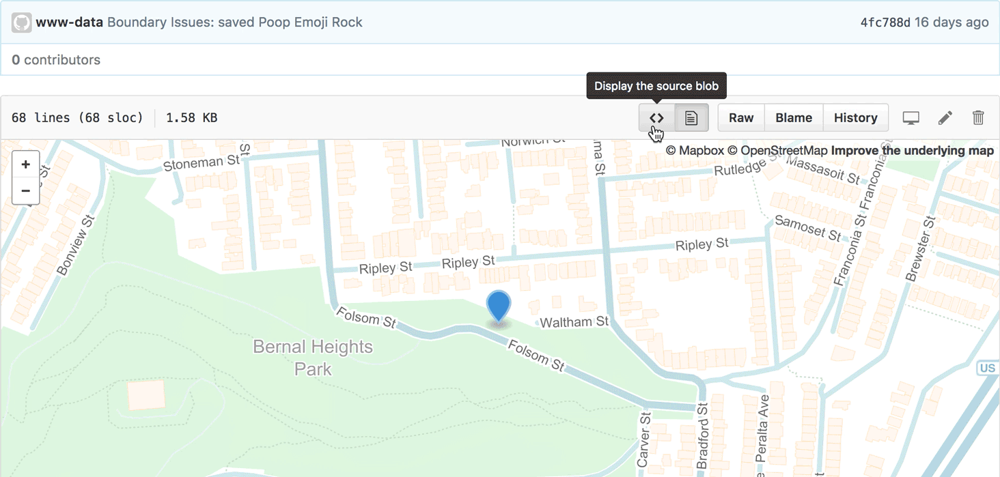

Who’s On First records , encoded as GeoJSON flat files, have always supported a failure scenario where you can open them up in Microsoft Word, or TextEdit, or your favorite text editor here and save the changes. Or, if you’re feeling even lazier , you could go to GitHub and click on the little pencil icon to modify a record in your browser.

As it turns out, these methods can be cumbersome, so we’ve been developing an internal-facing (for now) web-based editor for Who’s On First records called Boundary Issues (shout out to former Mapzen-er Ingrid Burrington for the name—also, hey, go buy her book ). And to be clear, yes, this is a public blog post about a not-yet-public editing tool. It is still just a little too early to open access up to everyone, but we will get there.
Boundary Issues does not yet edit polygon boundaries in the way that OpenStreetMap’s iD editor does. It will do that someday, but right now it’s primarily for editing GeoJSON properties . Here is an excerpt of the GeoJSON document for the Poop Emoji Rock :
{
"type": "Feature",
"geometry": {
"coordinates": [
-122.411529,
37.743715
],
"type": "Point"
},
"properties": {
"geom:latitude": 37.743715,
"geom:longitude": -122.411529,
"wof:id": 1008184051,
"wof:name": "Poop Emoji Rock",
"wof:parent_id": 420780697,
"wof:placetype": "venue"
}
}
If you’re unfamiliar with the Poop Emoji Rock, it is a frequently painted rock that was recently made to look like Unicode character U+1F4A9 “PILE OF POO” (also known as 💩). As you might expect, it has a Who’s On First record .
Image courtesy of Telstar Logistics .
GeoJSON is a specific kind of JSON (a file format for structuring data), which
specifies
that we can expect a handful of predictable top-level properties. GeoJSON makes it easy for a computer to keep descriptions about
where a place is
(the
geometry
) separate from descriptions about the
qualities of the place
(the
properties
).
The very first feature of Boundary Issues was for choosing a place’s geometry: click on the map to set the position. (Thanks to Leaflet.draw for the add-a-pin UI.)

As for what goes in the GeoJSON
properties
list, it is very open-ended.
Who’s On First
provides some conventions about
what and how to encode things in the GeoJSON properties
. This is meant to maximize the compatibility of GeoJSON records between a broad variety of applications.
For example, here is how you might add tags to a record using Boundary Issues.

Notice that we’re using property
namespaces
. Instead of specifying a
tags
property, we use
wof:tags
, meaning it’s a part of the
Who’s On First namespace
. This lets us keep things that are common to
all WOF records
like
wof:name
separate from from Mapzen
opinionated things
like
mz:categories
. This namespacing is in the same
spirit
as the
Semantic Web
, but without the verbosity of
RDF
.
The namespaces also offer a natural way to group related properties in the user interface.

Unlike the more freestyle approach of geojson.io , Boundary Issues has built-in scaffolding that guides how properties get encoded. The user interface is saying “here are some of the things you can type in.” For example, what are the names people are known to call this place? Are there concordances to records in other databases we can hold hands with?
Boundary Issues also keeps a short list of
minimal viable properties
that are required to make a Who’s On First record. When creating a
venue placetype
you can pretty much drop a pin on the map, type in a
wof:name
value, and you’ve got yourself a WOF record. All the other properties are optional, and will be assigned reasonable default values.
We turned to JSON Schema , yet another flavor of JSON , to define how different properties get encoded. JSON Schema was originally created as a way of declaring guidelines that say this is VALID or this is INVALID . Using it for that purpose does have some complications , but the specification files themselves can be read by a variety of programming languages. It lets us build a basic scaffolding for records that isn’t tied into any one particular application.
We can use the schema to construct a brand new empty record, and to nudge each of its properties into their intended data types (strings, numbers, lists, etc.), and provide a default value when we need one. Perhaps we will use our JSON Schema for validating records some day.
Here’s an excerpt from our schema (derived from this sample GeoJSON schema ):
{
"properties": {
"wof:id": {
"type": "integer"
},
"wof:parent_id": {
"type": "integer",
"default": -1
},
"wof:name": {
"type": "string"
}
}
}
The way the property-editing interface behaves requires an additional set of guidelines . These rules are baked into the source code (since they’re specific to Boundary Issues), and they let us specify things on a per-property basis like:
- Is the property editable ? If not, the property should be set by software automatically.
- Is the property deletable ? Which is really just another way of saying “this property is required, it must have a value of some sort .”
- Is the property visible ? Almost all properties are visible in the list, but sometimes it’s helpful to hide them from the editing interface.
- Is the property on the short list of minimum viable properties ?
Collectively these data types, default values, and editing behaviors get baked into an HTML
<form>
element, with various clues for the JavaScript code about how it should treat each property.
<div class="json-schema-field json-schema-required">
<input type="text" name="properties.wof:parent_id" value="-1"
disabled="disabled" data-type="integer">
</div>

In the case of
wof:parent_id
, you might wonder how it can be both
required
and also
disabled
? With these constraints, how could the value ever change from the default value? The answer is in our growing assortment of bespoke editing interfaces, discussed below.
In the case of
wof:parent_id
and
wof:hierarchy
, these values are chosen automatically thanks to our internal
point in polygon service
. After dropping a pin on the map, the code consults with the point in polygon service, then suggests a potential hierarchy (or
hierarchies
,
there can be more than one
).

The hierarchy interface doesn’t actually offer any new user-facing controls, instead it just kind of does stuff , encoding properties behind the scenes based on the chosen latitude and longitude coordinates. There are some additional bespoke property interfaces within the UI that make it easier to express things that don’t sit neatly inside of text input boxes. Recent additions include a multi-language name editor, an address parsing widget, a way of encoding a venue’s open and closing hours, and a way of encoding venue categories. We hope some of these UI widgets—such as the address parsing one—will eventually get extracted out into a generalized JavaScript library for use outside of Boundary Issues.


Boundary Issues is still very much a wet-paint prototype, but it’s making steady progress. There is a growing backlog of issues to work through, and plenty of Who’s On First records that need some TLC. We’ll get there, and once the editor is a little more mature we’ll be sure to invite you to give it a try!

{kind=link}